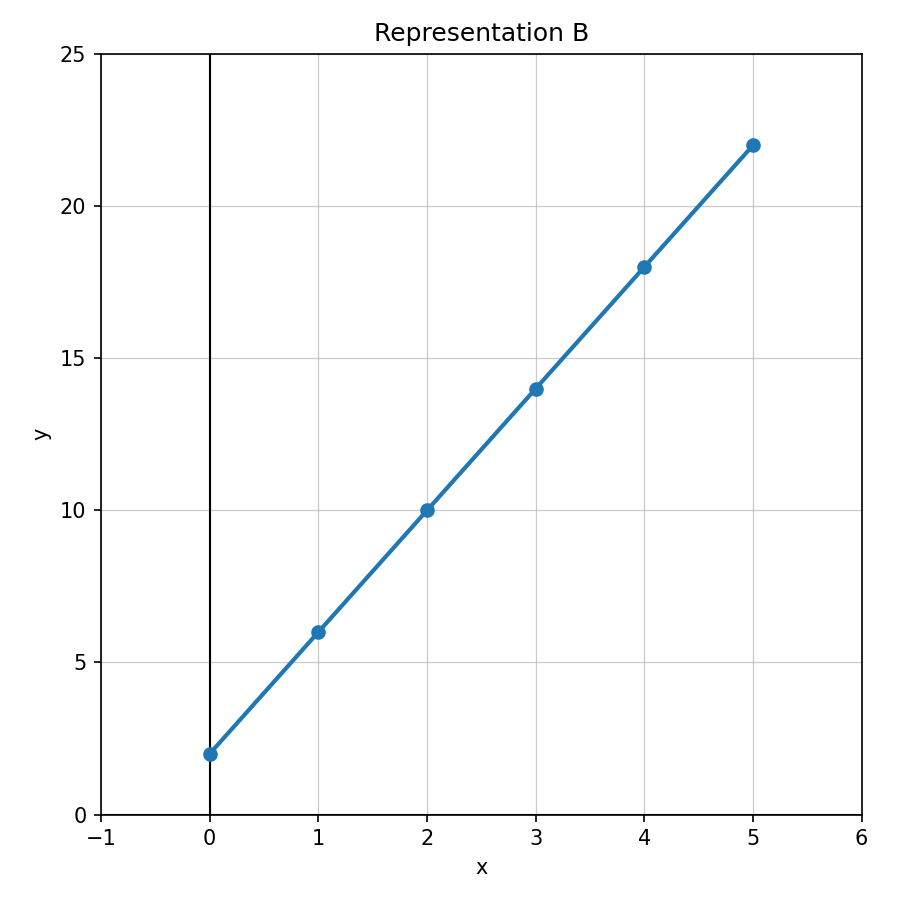

Unit 1 · Section 5 · Activity 1
Showdown
Equations as Models

Unit 1.5 · Activity 1 · ShowdownProblem 1
Problem 1
Identify variables
In the equation $C=7h+15$, $C$ is total cost. What could $h$, $7$, and $15$ represent?
Unit 1.5 · Activity 1 · ShowdownSolution 1
Solution 1
Identify variables
In the equation $C=7h+15$, $C$ is total cost. What could $h$, $7$, and $15$ represent?
Solution: One possible interpretation: $h$ could represent the number of hours, $7$ could represent $7$ dollars per hour, and $15$ could represent a starting fee. Then $C$ is the total cost.
Unit 1.5 · Activity 1 · ShowdownProblem 2
Problem 2
Equation from words
Write an equation for: Five more than twice a number is $31$.
Unit 1.5 · Activity 1 · ShowdownSolution 2
Solution 2
Equation from words
Write an equation for: Five more than twice a number is $31$.
Solution: One equation is $2n+5=31$.
Unit 1.5 · Activity 1 · ShowdownProblem 3
Problem 3
Solve and interpret
A streaming service charges $9$ dollars per month after a $6$ sign-up fee. The total cost is $60$. Write and solve an equation, then interpret the solution.
Unit 1.5 · Activity 1 · ShowdownSolution 3
Solution 3
Solve and interpret
A streaming service charges $9$ dollars per month after a $6$ sign-up fee. The total cost is $60$. Write and solve an equation, then interpret the solution.
Solution: Let $m$ be the number of months. The equation is $9m+6=60$. Subtract $6$: $9m=54$. Divide by $9$: $m=6$. The solution means the service costs $60$ total after $6$ months.
Unit 1.5 · Activity 1 · ShowdownProblem 4
Problem 4
Reasonableness
A student solves $4+6m=43$ and gets $m=6.5$. In a context where $m$ is the number of movie tickets, explain why the algebraic solution may not be a reasonable final answer.
Unit 1.5 · Activity 1 · ShowdownSolution 4
Solution 4
Reasonableness
A student solves $4+6m=43$ and gets $m=6.5$. In a context where $m$ is the number of movie tickets, explain why the algebraic solution may not be a reasonable final answer.
Solution: The algebraic solution $m=6.5$ is not reasonable as a final answer if $m$ is movie tickets because you usually cannot buy half of a ticket. A reasonable final answer would need to be a whole number and should also fit the context.
Unit 1.5 · Activity 1 · ShowdownProblem 5
Problem 5
Solve inequality
Solve: $$n+8<20$$
Unit 1.5 · Activity 1 · ShowdownSolution 5
Solution 5
Solve inequality
Solve: $$n+8<20$$
Solution: Subtract $8$ from both sides: $n<12$.
Unit 1.5 · Activity 1 · ShowdownProblem 6
Problem 6
Solve inequality
Solve: $$4x\le 28$$
Unit 1.5 · Activity 1 · ShowdownSolution 6
Solution 6
Solve inequality
Solve: $$4x\le 28$$
Solution: Divide both sides by $4$: $x\le 7$.
Unit 1.5 · Activity 1 · ShowdownProblem 7
Problem 7
Test value
Determine whether $-2$ is a solution to $x\ge -2$.
Unit 1.5 · Activity 1 · ShowdownSolution 7
Solution 7
Test value
Determine whether $-2$ is a solution to $x\ge -2$.
Solution: Yes. Substitute $x=-2$: $-2\ge -2$ is true because the inequality includes equality.
Unit 1.5 · Activity 1 · ShowdownProblem 8
Problem 8
Read graph
Use Number Line B. Write the inequality represented by the graph.
Unit 1.5 · Activity 1 · ShowdownSolution 8
Solution 8
Read graph
Use Number Line B. Write the inequality represented by the graph.
Solution: The graph represents $x\le -1$ because it has a closed point at $-1$ and shading to the left.
Unit 1.5 · Activity 1 · ShowdownProblem 9
Problem 9
Solve and graph
Solve and graph: $$x-5\ge 9$$
Unit 1.5 · Activity 1 · ShowdownSolution 9
Solution 9
Solve and graph
Solve and graph: $$x-5\ge 9$$
Solution: Add $5$ to both sides: $x\ge 14$. The graph would have a closed point at $14$ and shading to the right.
Unit 1.5 · Activity 1 · ShowdownProblem 10
Problem 10
Context inequality
A school bus holds at most $48$ students. There are already $17$ students on the bus. Write and solve an inequality for how many more students can get on.
Unit 1.5 · Activity 1 · ShowdownSolution 10
Solution 10
Context inequality
A school bus holds at most $48$ students. There are already $17$ students on the bus. Write and solve an inequality for how many more students can get on.
Solution: Let $s$ be the number of more students. Since the bus holds at most $48$, $17+s\le 48$. Subtract $17$: $s\le 31$. At most $31$ more students can get on.
Unit 1.5 · Activity 1 · ShowdownProblem 11
Problem 11
Error analysis
A student solves $x+7\le 12$ and writes $x\le 19$. Identify the error and solve correctly.
Unit 1.5 · Activity 1 · ShowdownSolution 11
Solution 11
Error analysis
A student solves $x+7\le 12$ and writes $x\le 19$. Identify the error and solve correctly.
Solution: The error is adding $7$ instead of subtracting $7$. Correctly, subtract $7$ from both sides: $x\le 5$.
Unit 1.5 · Activity 1 · ShowdownProblem 12
Problem 12
Critique and revise
A club has $100$ dollars and wants to buy shirts that cost $12$ dollars each plus a $16$ setup fee. Write an inequality, solve it, and revise the answer so it makes sense for whole shirts.
Unit 1.5 · Activity 1 · ShowdownSolution 12
Solution 12
Critique and revise
A club has $100$ dollars and wants to buy shirts that cost $12$ dollars each plus a $16$ setup fee. Write an inequality, solve it, and revise the answer so it makes sense for whole shirts.
Solution: Let $s$ be the number of shirts. The inequality is $12s+16\le 100$. Subtract $16$: $12s\le 84$. Divide by $12$: $s\le 7$. The club can buy at most $7$ shirts.
Unit 1.5 · Activity 1 · ShowdownProblem 13
Problem 13
Match rule
Which rule matches a starting value of $2$ and rate of change $4$?
- $y=2x+4$
- $y=4x+2$
- $y=x+6$
Unit 1.5 · Activity 1 · ShowdownSolution 13
Solution 13
Match rule
Which rule matches a starting value of $2$ and rate of change $4$?
- $y=2x+4$
- $y=4x+2$
- $y=x+6$
Solution: The correct rule is b. $y=4x+2$ because the rate of change is $4$ and the starting value is $2$.
Unit 1.5 · Activity 1 · ShowdownProblem 14
Problem 14
Table feature
Use the table to identify the starting value.
| $x$ | 0 | 1 | 2 | 3 |
|---|---|---|---|---|
| $y$ | 5 | 8 | 11 | 14 |
Unit 1.5 · Activity 1 · ShowdownSolution 14
Solution 14
Table feature
Use the table to identify the starting value.
| $x$ | 0 | 1 | 2 | 3 |
|---|---|---|---|---|
| $y$ | 5 | 8 | 11 | 14 |
Solution: The starting value is $5$ because when $x=0$, $y=5$.
Unit 1.5 · Activity 1 · ShowdownProblem 15
Problem 15
Graph/equation match
Determine whether Representation B matches $y=4x+2$. Explain with evidence.

Unit 1.5 · Activity 1 · ShowdownSolution 15
Solution 15
Graph/equation match
Determine whether Representation B matches $y=4x+2$. Explain with evidence.
Solution: Representation B does not match $y=4x+2$. The graph appears to have starting value $2$, but its rate of change is not $4$ per $1$ unit of $x$; it rises less steeply than $4$ units per step.
Unit 1.5 · Activity 1 · ShowdownProblem 16
Problem 16
Representation critique
A student says the table and equation represent the same relationship. Determine whether the student is correct and justify.
| $x$ | 0 | 1 | 2 | 3 |
|---|---|---|---|---|
| $y$ | 3 | 6 | 9 | 12 |
Equation: $y=3x+3$
Unit 1.5 · Activity 1 · ShowdownSolution 16
Solution 16
Representation critique
A student says the table and equation represent the same relationship. Determine whether the student is correct and justify.
| $x$ | 0 | 1 | 2 | 3 |
|---|---|---|---|---|
| $y$ | 3 | 6 | 9 | 12 |
Equation: $y=3x+3$
Solution: The student is correct. When $x=0$, $y=3$; when $x=1$, $y=6$; when $x=2$, $y=9$; and when $x=3$, $y=12$. The table matches the equation $y=3x+3$.
Unit 1.5 · Activity 1Exit Ticket
6-Question Exit Ticket
Equations as Models
1. A gym charges $8$ per class plus a $20$ sign-up fee. Write an equation for total cost $C$ after $c$ classes.Equations as Models
2. Solve and interpret: $5n+10=40$ when $n$ is the number of notebooks.Inequalities
3. Solve: $x+6\le 18$.Inequalities
4. A van holds at most $15$ people. There are already $9$ people inside. Write and solve an inequality for how many more people can ride.Representations
5. Which rule has starting value $4$ and rate of change $3$? $y=4x+3$ or $y=3x+4$Representations
6. A table has $y=2,6,10,14$ for $x=0,1,2,3$. Identify the starting value and rate of change.Unit 1.5 · Activity 1Exit Ticket Answer Key
Exit Ticket Answer Key
Equations as Models
1. A gym charges $8$ per class plus a $20$ sign-up fee. Write an equation for total cost $C$ after $c$ classes.Equations as Models
2. Solve and interpret: $5n+10=40$ when $n$ is the number of notebooks.Inequalities
3. Solve: $x+6\le 18$.Inequalities
4. A van holds at most $15$ people. There are already $9$ people inside. Write and solve an inequality for how many more people can ride.Representations
5. Which rule has starting value $4$ and rate of change $3$? $y=4x+3$ or $y=3x+4$Representations
6. A table has $y=2,6,10,14$ for $x=0,1,2,3$. Identify the starting value and rate of change.Teacher key:
- $C=8c+20$.
- $5n+10=40$, so $5n=30$ and $n=6$. This means $6$ notebooks.
- $x\le 12$.
- Let $p$ be more people. $9+p\le 15$, so $p\le 6$. At most $6$ more people can ride.
- $y=3x+4$.
- Starting value: $2$. Rate of change: $4$.